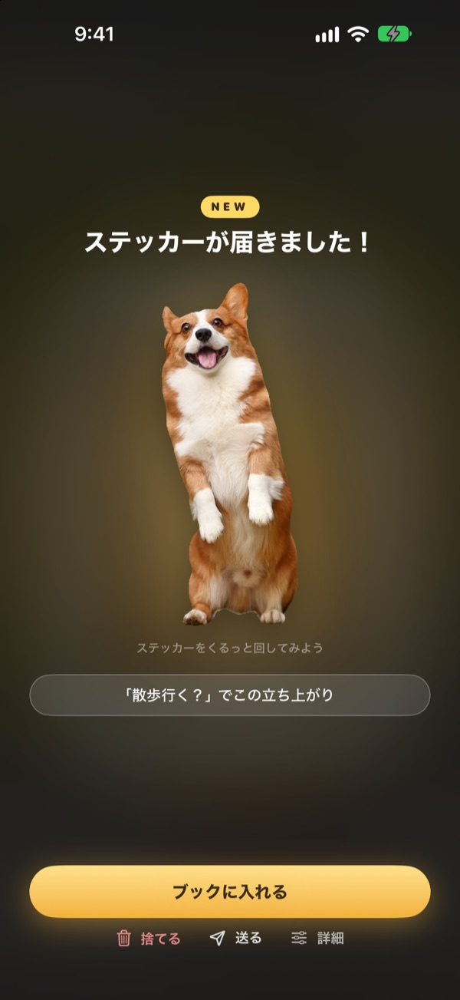
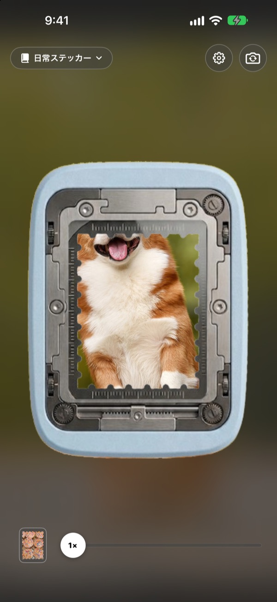
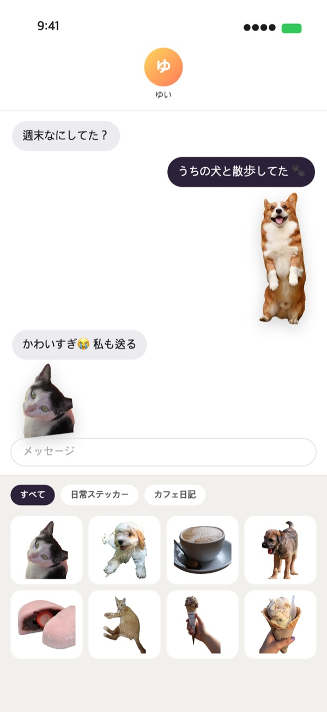
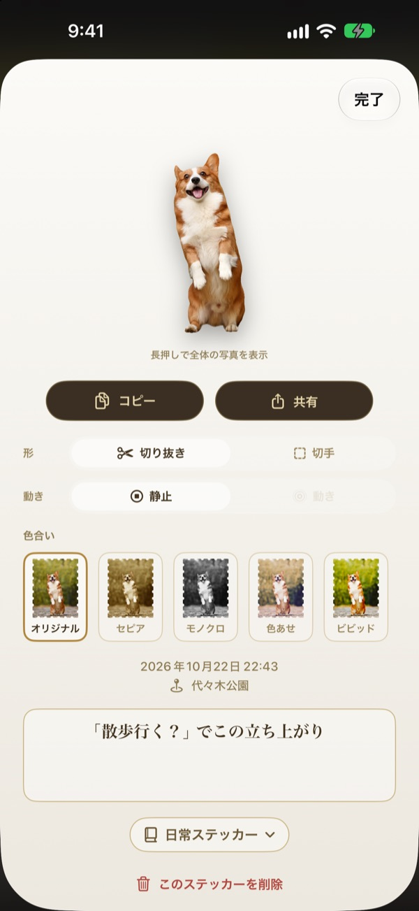
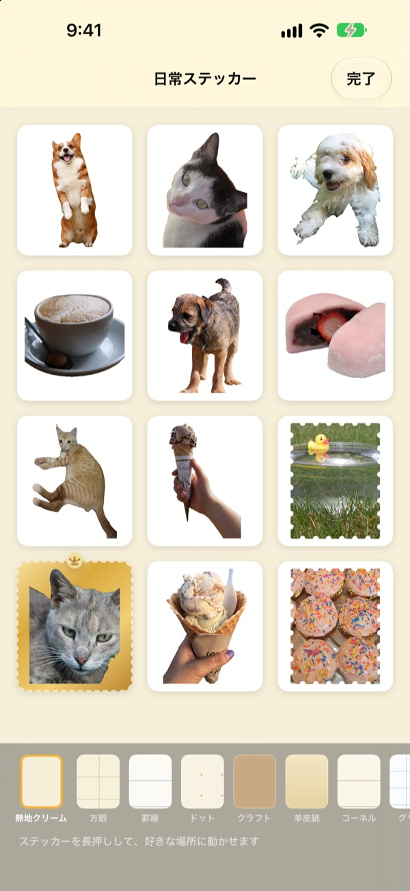

長押しすると、
その瞬間がステッカーに
パンチの窓に場面を合わせて、長押ししてから指を離します。犬なら犬の形のまま切り抜かれ、押す前後の短い動きまで残ります。はがしたステッカーは、メッセージやキーボードからすぐ送れます。
すべての機能が無料です。ステッカーと写真はデバイスの中にだけ保存されます。

はがしてみよう
場面を選んで、パンチボタンを長押ししてから離してください。はがしたあとで、形や色合いも変えてみましょう。
かわいい瞬間は、カメラロールで眠ったまま
犬が舌を出した瞬間を撮れても、ステッカーにして送るには、写真を探して、切り抜いて、別のステッカーアプリを開く必要があります。そのころには、もう会話は次の話題へ。Punchingなら撮ったその場でステッカーをはがし、ブックに入れた瞬間にメッセージのステッカーパネルに並びます。
被写体は切り抜き、風景は切手に
人やペット、モノのように切り抜ける被写体があれば、その姿だけを切り抜きます。風景のように被写体がなければ、ギザギザの縁の切手の形ではがします。
押す前後の短い動きも一緒に記録されるので、ステッカーが動きます。

メッセージとキーボードですぐに
はがしたステッカーは、メッセージアプリのステッカーパネルに並びます。Punching キーボードをオンにすれば、ほかのアプリでも選んで貼れます。
動くステッカーは動いたまま届きます。長押ししてコピーすれば、どこにでも貼り付けられます。

形も色合いも、はがしたあとで
切り抜きと切手、動きと静止は、いつでも切り替えられます。元の写真がそのまま残るので、何度変えても最初と同じくっきりした仕上がりです。
オリジナル、セピア、モノクロ、色あせ、ビビッド、シアンから色合いを選び、ひとこと、日付、場所も残せます。

ブックに集めて、紙のステッカーに印刷
テーマごとにブックを作れば、メッセージとキーボードでもブックごとに選べます。クラフト、方眼、罫線、羊皮紙などの台紙を選び、並び順も自由にデコれます。
ブックを切手の形のカットライン入りの印刷用PDFにして、ステッカー用紙にそのまま印刷できます。

はじめかたは3ステップ
- 1
パンチに合わせる
カメラ中央の窓に、残したいものを入れます。
- 2
長押しして離す
指を離した瞬間、ステッカーがはがれます。
- 3
入れて、送る
ブックに入れると、メッセージとキーボードにすぐ並びます。
使う場所と、変える場所
- メッセージ
- 入力欄の横の ＋ ▸ ステッカー ▸ Punching ステッカー
- ほかのアプリ
- Punching キーボードをオンにし、地球儀ボタンで切り替えて貼る
- どこでも
- ステッカーを長押ししてコピーし、貼り付ける
- 紙のステッカー
- ブックの ⋯ ▸ 使う ▸ 印刷用ステッカーシート（PDF）
- 台紙と並び順
- ブックの ⋯ ▸ 自由にデコる
- 前に撮った写真
- ブックの「写真から読み込む」
- 最初にはがす形
- 設定 ▸ はがす ▸ 基本の形
- 動きの表示
- 設定 ▸ 表示 ▸ 動きを自動再生
- すぐに開く
- ショートカットやコントロールセンターの「Punching カメラを開く」
設定は、カメラ画面の右上にある歯車ボタンから開けます。
よくある質問
ステッカーが動きません。
カメラ右上の設定 ▸ 表示で、動きを自動再生がオンになっているか確認してください。ステッカーをタップして、形の下にある動きがオンかどうかも見てください。動きはいつも一緒に記録されているので、あとからでもオンにできます。写真アプリから読み込んだ写真は1枚だけなので動きません。
切り抜きではなく、切手の形になります。
風景のように切り抜く被写体がない場面は、自動で切手の形ではがします。ステッカーをタップすれば形からいつでも変更できます。最初から切手の形ではがしたい場合は、設定 ▸ はがす ▸ 基本の形を変えてください。
メッセージにステッカーが出てきません。
メッセージの入力欄の横にある ＋ ボタン ▸ ステッカーから、Punching ステッカーを探してください。Punching でステッカーを1枚以上はがすと表示され、ブックが2つ以上あればブックごとに選べます。詳しい手順は、設定 ▸ 使う ▸ メッセージとキーボードで使うにあります。
キーボードはどうやってオンにしますか？
設定 ▸ 使う ▸ メッセージとキーボードで使うの「設定を開く」をタップし、キーボード ▸ Punching ステッカーをオンにします。ステッカーを貼るにはフルアクセスを許可が必要ですが、キーボードが入力した文字を読んだり送ったりすることはなく、インターネットにも接続しません。あとは、どのアプリでもキーボードの地球儀ボタンで Punching ステッカーに切り替えるだけです。
本物のステッカーに印刷したいです。
ブック右上の ⋯ ▸ 使う ▸ 印刷用ステッカーシート（PDF）をタップしてください。ブック単位で、切手の形のカットライン入り300dpiの印刷用PDFができ、家庭用プリンタのステッカー用紙や印刷所でそのまま使えます。詳しい手順は同じメニューの印刷ガイドにあります。
前に作ったコレクションはどこへ行きましたか？
1.0.1から、ステッカーのまとめ方はブックひとつになりました。コレクションは同じ名前のブックになり、入っていたステッカー、台紙、並び順もそのまま移っています。
ステータスバーに緑のランプが点きます。
iOSのカメラ使用中のインジケータです。カメラ画面が表示されている間だけ点き、ブックを開いている間はカメラを止めるので消えます。
ステッカーを削除するとどうなりますか？
ステッカー、元の写真、動きのデータがデバイスから完全に削除され、メッセージのステッカーパネルからも消えます。元に戻せないので、よく確かめてから削除してください。
写真とステッカーはどこに保存されますか？
すべてデバイスの中にだけ保存されます。アカウントも、独自のサーバーも、広告もありません。外に送られるのは、匿名の利用統計とエラーレポート、そしてご自身で送ったフィードバックだけです。詳しくはプライバシーポリシーをご覧ください。
本当に無料ですか？
はい、すべての機能を無料で使えます。気に入ったらアプリ内から開発者にチップを送れますが、チップで使えるようになる機能はありません。
ご質問やご意見は leeo@kakao.com までお送りください。通常2〜3日以内にお返事します。バグの報告や機能の提案は、GitHub（M1zz/StampCamera）のIssueでも受け付けています。